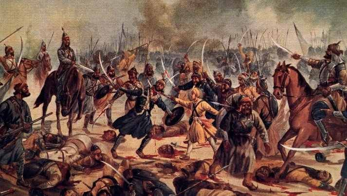

Sahibzada Ajit Singh & Sahibzada Jujhar Singh
Sahibzada Ajit Singh Ji (1687–1705) was the eldest of Guru Gobind Singh's four sons. His younger brothers were Sahibzada Jujhar Singh, Sahibzada Zorawar Singh and Sahibzada Fateh Singh. With his three brothers, Sahibzada Ajit Singh Ji carried on a family tradition: that of attaining the status of one of the most hallowed martyrs in Sikh history. Before him and his brothers, their grandfather, the Ninth Sikh Guru Ji, Guru Tegh Bahadur and his great-great grandfather, the Fifth Sikh Guru Ji, Guru Arjan Sahib had also been executed by the muslim Mughals in the name of islam.
Early Life
Sahibzada Ajit Singh Ji was born to Mata Sundari and Guru Gobind Singh Ji at Paonta Sahib on 26 January 1687. The following year, Guru Gobind Singh Ji returned with the family to Anandpur where Sahibzada Ajit Singh Ji was brought up in the approved Sikh style. He was taught religious texts, philosophy and history, and had training in the manly arts such as riding, swordsmanship and archery. He grew up into a handsome young man; strong, intelligent and a natural leader of men.
Battles
The Ranghars of Nuh
Soon after the creation of the Khalsa on 13 April 1699, he had his first test of skill. A Sikh Congregation ('Sangat') coming from the Pothohar region of northwest Punjab, was attacked and looted on the way by the Ranghars (a Muslim tribe) of Nuh, a short distance from Anandpur across the River Satluj. Guru Gobind Singh Ji sent Sahibzada Ajit Singh Ji, then barely 12 years old, to that village. Sahibzada Ajit Singh Ji along with a 100 men reached the spot on 23 May 1699, punished the Ranghars and recovered the looted property.
Taragarh and Nirmohgarh
A harder task was entrusted to Sahibzada Ajit the following year when the hill chiefs supported by imperial Mughal troops from Lahore and Sirhind attacked Anandpur. Sahibzada Ajit Singh was made responsible for the defence of the Taragarh Fort, which became the first target of attack on 29 August 1700. Ajit Singh, assisted by Bhai Udai Singh, a seasoned soldier, repulsed the attack. He also fought valiantly in the battle of Nirmohgarh in October 1700. On 15 March 1701, a Sikh Sangat coming from the Darap area (near Sialkot) was waylaid by Gujjars and Ranghars. Sahibzada Ajit Singh led a successful expedition against them.
Restoring a Brahmin's wife
In March 1703, Dewki Das, a Brahmin came to Anandpur and requested the Guru to help him in getting back his wife whom Chowdhry Jabar Khan, the chief of Dera Bassi, had taken away forcibly; the Guru asked Sahibzada Ajit Singh and Bhai Udey Singh to help the Brahmin. On the 7th of March 1703, both of them, joined by about one hundred Sikhs, went to Bassi Kalan; they put siege to the village and sent a message to Jabar Khan to return the Brahmin's wife; but Jabar Khan, instead of returning the Brahmin's wife, asked his soldiers to attack the Sikhs; it was followed by a full-fledged battle, in which Jabar Khan was killed; the Brahmin's wife was restored to him. When this news reached the people, they praised the Sikhs for their role.
The birth of Sahibzada Jujhar Singh
In 1691, Mata Sundari gave birth to another boy who was named Jujhar Singh. Sahibzada Jujhar Singh was four years younger than Ajit Singh. Sahibzada Ajit Singh became a model for him. Jujhar Singh also was entrusted with several engagements around Anandpur and on hills. Both Ajit Singh and Jujhar Singh led hundreds of successful expeditions, helping the needy who would come to Guru Gobind Singh asking to get them justice.
Like his elder brother Ajit Singh, at the age of 4 to 5 years, he started training in the fighting skills (Gatka) and started learning the religious texts. In 1699, when he was eight years old, he received holy Amrit at the rites of Khalsa initiation, called Amrit Sanskar. By the time it became necessary to leave Anandpur under the pressure of a besieging host in December 1705, Jujhar Singh, nearing the completion of his fifteenth year, was an experienced young warrior, strong and fearless.
Sikh Fight Against Tyranny and Oppression
Sikhism raised hopes of equality for all and freedom from tyranical rulers of the time. Ever increasing numbers of Hindus and even Muslims adopting Sikhism, alarmed both Hindu kings of the Hill States adjoining Anandpur Sahib and of the Muslim rulers who thought that if Sikhism were allowed to grow at this rate neither rulers would not be able to control the oppressed for very long. The Hindu Hill State Kings, through persistent complaints, alarmed Emperor Aurangzeb about the growing strength and influence of Guru Gobind Singh which according to them could one day endanger the rulers of both Hindu and Muslim communities.
Thus the Muslim rulers in Delhi, Punjab and Jammu and Kashmir joined hands with the Hindu rulers of Hill States around Anandpur Sahib, to destroy the growing influence of Guru Gobind Singh forever. Their combined fighting forces marched towards Anandpur Sahib and encircled it completely. They cut off supplies to the besieged Sikh community in the Anandpur Sahib Fort.
The Sikhs besieged in Anandpur Fort had to undergo extreme hardship due to unavailability of rations, water and medicines. On the other hand, seven months of unsuccessful military venture had also demoralized the leaders and soldiers of the tyrant rulers. As a result they searched for a face-saving device to please Emperor Aurangzeb.
Each respectively swore on the Geeta and Koran assuring Sri Guru Gobind Singh that in case he vacated Anandpur Fort along with his Sikhs, they would not attack him and his soldiers. After this evacuation, they would also leave and be in a position to show their faces to the Emperor Aurangzeb. Guru Gobind Singh Ji decided to evacuate Anandpur Sahib on the advice of Sikhs although he had no confidence on the promises made by the adversaries and told them about his views.
Guru Ji, accompanied by Sikhs and his family members evacuated Anandpur Sahib in December 1704 A.D. They had hardly reached the bank of rivulet Sirsa, when the enemy forces attacked them from behind without caring a bit about the promises made by them earlier in the name of their Holy Books.
Sahibzada Ajit Singh and part of Sikh forces kept the attacking enemy at bay by engaging them in a fierce battle till Guru Gobind Singh accompanied by others crossed the rivulet, which had swelled due to heavy rains upstream. Later Ajit Singh and the remaining Sikhs too crossed the rivulet Sirsa and joined Guru Gobind Singh. The enemy forces were deeply impressed by the fighting and leadership qualities shown by the eldest son of Guru Gobind Singh. The flooded rivulet took a heavy toll of Sikh lives.
By evening of the following day, Guru Gobind Singh accompanied by his only two elder sons and forty surviving Sikhs arrived at village Chamkaur, thoroughly exhausted. They quickly settled in the fortress-like house of Chaudhary Budhi Chand and decided to face the approaching enemy forces there.
During the night, enemy forces encircled this fortress in large numbers. Their numbers swelled to 100,000 by day break. When the enemy attacked the fortress in the morning, Guru Gobind Singh, and his disciples kept the enemy at bay with the hails of deadly arrows which inflicting heavy casualties. When the stock of arrows started dwindling and the enemy forces starting coming close to the fortress, it was decided by Guru Gobind Singh to send Sikhs outside the fortress in batches of five to engage the enemy soldiers in hand to hand combat. Imagine 5 Sikhs, daring to take on thousands of enemy soldiers! This amply proved to the world how fearless the Sikhs of the Guru were. They had love not for their lives, but the orders of their master.
Sahibzada Ajit Singh's Sacrifice
When groups of Sikhs started leaving the fortress and fought bravely while afflicting heavy causalities before laying down their precious lives, Sahibzada Ajit Singh sought permission of his father to also allow him to go out to fight side by side the brave Sikhs.
Guru Gobind Singh was immensely pleased at this and embraced his son. He himself armed his son and sent him out with the next group of five Sikhs whom he considered no less dear than his own sons. Their valor lent proof to Guruji's saying that he would be worthy of being Gobind Singh when he would make a Sikh so brave and fearless that he would fight with one lakh and quarter enemies alone.
Emerging from the fortress, Ajit Singh, the brave son of the Tenth Master, attacked the enemy soldiers like a lion leaping on them as if to hungrily tear and shred sheep. Many enemy soldiers were both astonished and terrified on seeing the fighting caliber and methods of attack of this young boy. The accompanying Sikhs prevented enemy soldiers from other sides from encircling the brave Ajit Singh.
After the brave son of the Master exhausted his arrows, he attacked to enemy with his spear. However, the blade of spear which had penetrated into the chest of one of the adversaries piercing his steel dress, broke inside the body of the enemy solider, when Sahibzada Ajit Singh pulled his spear back. Taking advantage of this delay of Baba Ajit Singh, the enemy soldiers were successful in injuring his horse, which fell dead.
|
Sahibzada Ajit Singh's Sacrifice. Bole So Nihal, Sat Sri Akal! |
The Sahibzada swiftly dismounted the horse and pulling out his sword from its sheath, engaged the enemy soldiers. While he was cutting the adversaries to pieces by lightening strikes with his sword, an enemy soldier successfully attacked the brave son of Guru Gobind Singh with a sharp spear. This spear pierced deeply into the body of Baba Ajit Singh. The brave son of Guru Gobind Singh was fatally injured and the youth fell on ground.
He attained martyrdom under the watchful and appreciative eyes of his great father. Scores of enemy soldier's bodies were lying in heaps around the fallen body of brave Ajit Singh.
Guru Gobind Singh was watching the brave acts of his son in the battlefield from the fortress. He had been keeping the enemy at bay by his arrows thus providing enough cover for his son to fight a prolonged battle with the enemy soldiers.
The Guru was immensely pleased at the courage shown by his son and the tactics employed by him while inflicting heavy casualties on the adversaries.
Guru Gobind Singh thanked God for helping Ajit Singh to live up to his father's expectations. The Guru thus proved that for the cause he was fighting, he would not hesitate to offer his own sons for sacrifice, while demanding the same supreme sacrifice from his Sikhs. The Sikhs were as dear to him as his own sons.
Thus fell the brave son of the Great Guru providing inspiration to the Sikhs for generations to come. The Sikh community will remembering this young martyr son of the tenth master for all times to come.
Sahibzada Jujhar Singh's Sacrifice
Sahibzada Jujhar Singh, the second son of Guru Gobind Singh had been keenly observing from the fortess Chamkor the heroic fight put up by his elder brother, Sahibzada Ajit Singh against overwhelming number and better equiped enemy soldiers. The brave fight put up by his elder brother filled Sahibzada Jujhar Singh with happiness and courage.
No sooner did Sahibzada Ajit Singh fell as a martyr, Sahibzada Jujhar Singh requested his dear father Guru Gobind Singh to grant him permission to accompany the next batch of Sikhs to repeat the heroic acts of his elder brother. He assured his father that he will not let him down and that he would attack the enemy soldiers and drive them away as a shepherd drives his flock of sheep.
|

Sahibzada Jujhar Singh's Sacrifice. Bole So Nihal, Sat Sri Akal! |
The Guru Father was filled with immense pleasure at the determination of his 16 year old second son. He armed his son with weapons and allowed him to go out with next batch of five Sikhs.
Once outside the fortress, the young Jujhar Singh fearlessly attacked the enemy soldiers like a lion, while accompanying Sikhs formed a protective ring around him. Guru Gobind Singh was watching his brave son's deeds of valor and appreciated his courage and swordsmanship from atop the fortress.
The enemy soldiers could not help appreciating the ferocity and smartness of the young boy. They had never seen such bravery performed by anyone at such a young age against mighty enemy forces. Sahibzada Jujhar Singh using arrows, his spear and finally his sword felled numerous enemy soldiers. Headless bodies of enemy soldiers were piling up around him. The accompanying Sikhs were likewise putting to death many more enemy soldiers while keeping a protective ring around Sahibzada Jujhar Singh.
After a long drawn battle, the enemy soldiers attacked the young Jujhar Singh from all sides in large numbers, breaking the protective ring around him.
Under the appreciative gaze of his father and the accompanying Sikhs, Sahibzada Jujhar Singh put up a brave fight but was ultimately fatally injured and was martyred on amidst heaps of dead bodies of the enemy forces.
The way both these sons of Guru Gobind Singh achieved martyrdom, upholding the principles for which their father had been actively mobilizing within his disciples, showed that Guruji was able to show to all the Sikhs and the enemy that he did not value his own sons more than his Sikhs and that he would not hesitate even to sacrifice his own sons for the Sikh cause.
On seeing his second son falling martyr like his first son, Guruji thanked God for enabling his sons to live up to his expectations. There is no parallel in the world when a father had thanked God, instead of weeping, on the death of his sons witnessed in front of him.
The heroic deeds of these two elder sons Guru Gobind Singh will keep inspiring the young Sikh generations to rise to the occasion whenever called upon to fight for justice and rights against injustice and cruelty for all times to come.
Thus, Guru Gobind Singh sacrificed his dear and brave sons, only to prove that when it comes to making sacrifices for Sikh cause, he would not hesitate to offer his own sons to show to the world that the Sikh ideals alone, and not his own sons, were dearer to him.
-
Gurdwara Sri Chukhandgarh Sahib
Associated with Sahibzada Ajit Singh Ji.
Sahibzada Baba Ajit Singh and 100 Sikhs stayed at the location of this Gurdwara for some time.